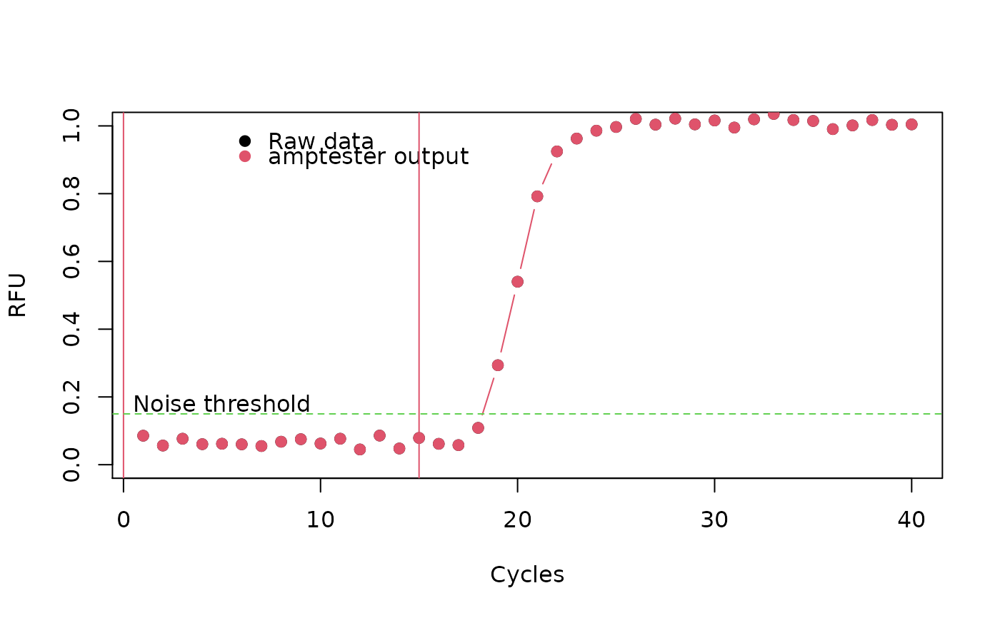
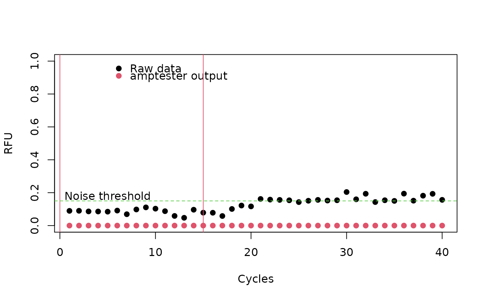
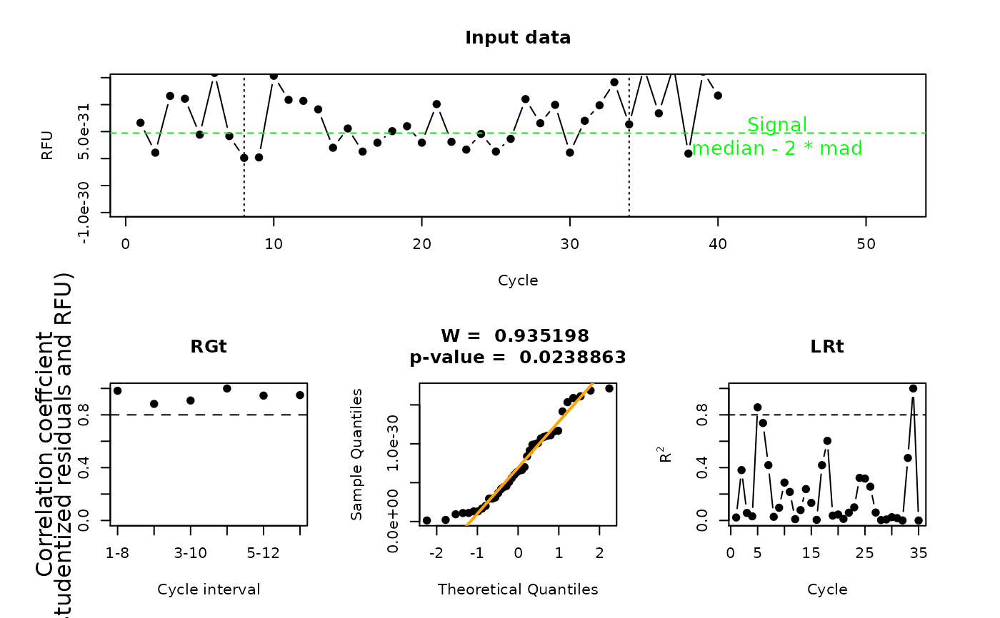

"amptest"amptest-class.RdAn S4 class containing the output amptester
function.
.Data:"numeric" is a vector containing the
fluorescence values.
decisions:"logical" contains outcomes of various tests.
shap.noisy is presence of noise, lrt.test states if data are
likely from a amplification curve and both tht.dec and tht.dec
defines if the amplification is "positive" or "negative".
noiselevel:"numeric" user-defined threshold for a
significant amplification signal.
background:range of the background signal in the amplification curve.
polygon:The pco test determines if the points in an amplification curve (like a polygon) are in a "clockwise" order. The sum over the edges result in a positive value if the amplification curve is "clockwise" and is negative if the curve is counter-clockwise.
slope.ratio:ratio of the slopes at the start and the end of exponential phase..
signature(object = "amptest"): prints summary
of the object. Silently returns vector of all calculated parameters.
signature(object = "amptest"): prints only
.Data slot of the object.
signature(object = "amptest"): plots input data and graphical
interpretation of link{amptester} tests' results.
Stefan Roediger, Michal Burdukiewicz
# Compare a positive and a negative amplification reaction. # First simulate positive reaction (fluo.pos) and than the # negative reaction (fluo.neg). # Simulation of an amplifiaction curve with some noise and a high signal. fluo.pos <- AmpSim(cyc = 1:40, noise = TRUE)[, 2] ampt.pos <- amptester(fluo.pos, manual = TRUE, background = c(0, 15), noiselevel = 0.15) # Plot amplification curve and result of amptester plot(fluo.pos, xlab = "Cycles", ylab = "RFU", pch = 19, ylim = c(0, 1))#> #> Amplification significance (threshold test): TRUE #> Amplification significance (signal level test): TRUE #> Amplification significance (resids growth test): FALSE #> Noise detected: FALSE #> Noise level: 0.15 #> Linearity: FALSE #> Polygon: 42.6849995857693 #> Background: (0, 15)# Simulation of an amplifiaction curve with high noise and a low signal. fluo.neg <- AmpSim(cyc = 1:40, noise = TRUE, ampl = 0.13, nnl = 0.4)[, 2] ampt.neg <- amptester(fluo.neg, manual = TRUE, background = c(0, 15), noiselevel = 0.15)#> #># Plot amplification curve and result of amptester plot(fluo.neg, xlab = "Cycles", ylab = "RFU", pch = 19, ylim = c(0, 1))#> #> Amplification significance (threshold test): FALSE #> Amplification significance (signal level test): FALSE #> Amplification significance (resids growth test): FALSE #> Noise detected: TRUE #> Noise level: 0.15 #> Linearity: FALSE #> Polygon: 5.58243555749617e-29 #> Background: (0, 15)